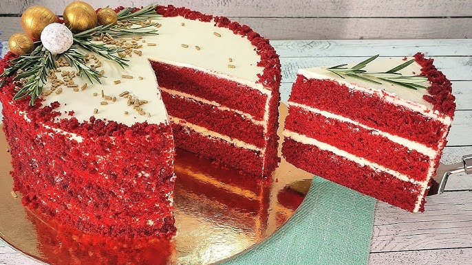

Десерты

Секреты и тонкости приготовления торта «Красный бархат» в домашних условиях
«Бархатный торт», «Красный торт», «Торт Вальдорф Астория»...
Читать далее →Будьте в курсе последних кулинарных трендов! Ежедневно публикуем свежие новости из мира гастрономии, обзоры ресторанов и интересные факты о еде.
«Бархатный торт», «Красный торт», «Торт Вальдорф Астория»...
Читать далее →Учитесь у лучших! Наши эксперты делятся своими фирменными рецептами, кулинарными секретами и профессиональными техниками приготовления. Регулярно публикуем эксклюзивные мастер-классы и интервью с шеф-поварами.
Шеф-повар, ресторатор
Талантливый шеф-повар и ресторатор. Известен своим вспыльчивым характером и безупречным вкусом. Шеф-повар ресторана Claude Monet.
Шеф-повар, телеведущий
Популярный шеф-повар и телеведущий. Ведущий кулинарных программ, владелец нескольких ресторанов в Санкт-Петербурге.
Бренд-шеф
Бренд-шеф известных ресторанов русской кухни. Признанный эксперт в области традиционной русской гастрономии.
Откройте для себя коллекцию наших лучших рецептов! Здесь собраны самые популярные блюда, которые высоко оценили наши пользователи. От классических до инновационных - каждый найдет что-то по вкусу.


Отправьтесь в кулинарное путешествие вокруг света! Исследуйте аутентичные рецепты разных стран, узнавайте об уникальных ингредиентах и традиционных способах приготовления блюд со всего мира.